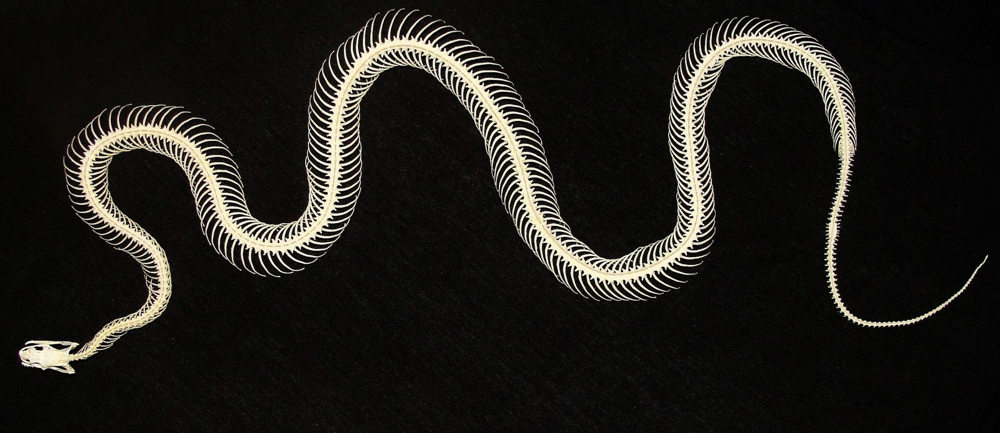

Materiał najlepiej zamrozić w całości, dbając o to, by by żadna z kończyn (jak również szyja i ogon)
nie odstawała i tym samym nie była narażona na ewentualne złamanie.
Tak przygotowany materiał owijamy folią lub wkładamy do szczelnie zawiązanego worka.
Jeśli zamrożenie jest niemożliwe, proszę o kontakt bezpośredni.
Wstecz